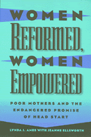

Revealing stories about the ways in which social programs help and harm women struggling to change their lives
Revealing stories about the ways in which social programs help and harm women struggling to change their lives


 Revealing stories about the ways in which social programs help and harm women struggling to change their lives
Revealing stories about the ways in which social programs help and harm women struggling to change their lives

|  |
Women Reformed, Women EmpoweredPoor Mothers and the Endangered Promise of Head StartLynda J. Ames with Jeanne Ellsworthpaper EAN: 978-1-56639-493-2 (ISBN: 1-56639-493-7) |
By chronicling the everyday experiences of women in a rural Head Start program, Lynda J. Ames and Jeanne Ellsworth examine the processes of underprivileged women working to make a better life for themselves and their families. The authors explain that in order to empower its participants, the Head Start program allows many women to work as aides or on advisory boards in order to learn how to impact the structures that constrain their lives. This enables participants to take more control while receiving financial assistance and other opportunities for new social support structures.
Head Start was designed around the assumption that its aim should be to "correct" certain presumed deficits of parents, and many policymakers and participants swear by the program for its capacity to empower and its remarkable success rate. Unfortunately, while empowerment can make women's lives more manageable and more rewarding, many administrators feel that it does not change the immediate structure of poverty. In the search for a program design that provides more accountability, administrators are moving to take more control of local programs, thereby decreasing the mothers' control and threatening the flexibility and the empowerment potential of the program, two key factors that have made Head Start so successful.
It is this struggle for control of the women's day-to-day lives and families that Ames and Ellsworth reveal through personal stories. Women Reformed, Women Empowered is not only a testament to the successes of the program, but a story of poor women finding the resources they need, and a call to reevaluate disempowering policies that can drive underprivileged families deeper into apathy and hopelessness.
Acknowledgments
Part I: Introduction
1. Prelude: The North Country
2. Two Wars on Poverty
Part II: Women Reformed
3. Taking Control of Everyday Life
4. Making Good Work
5. The American Dream
Part III: Women Empowered
6. Power and Ceremony
7. The Bureaucratization of North Country Head Start
8. Defiance...and Withdrawal
9. Devotion, Social Class, and the Union
10. The Limits on/of Empowerment: What Is to Be Done?
References
Index
Lynda J. Ames is Assistant Professor of Sociology at State University of New York, Plattsburgh.
Jeanne Ellsworthis Assistant Professor, Center for Educational Studies and Services at State University of New York, Plattsburgh.
Women's Studies
Education
Sociology
Women in the Political Economy, edited by Ronnie J. Steinberg.
No longer active.
Women in the Political Economy, edited by Ronnie J. Steinberg, includes books on women and issues of work, family, social movements, politics, feminism, and empowerment. It emphasizes women's roles in society and the social construction of gender and also explores current policy issues like comparable worth, international development, job training, and parental leave.
© 2015 Temple University. All Rights Reserved. This page: http://www.temple.edu/tempress/titles/1268_reg.html.